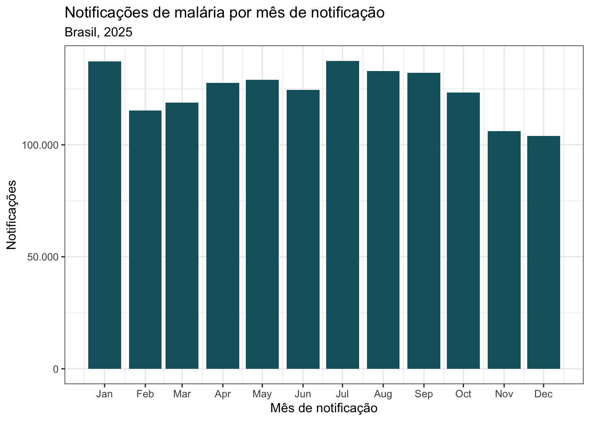

O SIVEP-Malária é o sistema nacional de vigilância epidemiológica da malária no Brasil. Seus registros permitem acompanhar a ocorrência da doença, caracterizar notificações, investigar locais prováveis de infecção e apoiar a avaliação de ações de vigilância e controle, especialmente em territórios onde a malária permanece um problema persistente de saúde pública.
Esta base organiza microdados de notificação do SIVEP-Malária em arquivos abertos, documentados e adequados para análises reprodutíveis. O objetivo é facilitar o uso dos dados por pesquisadores, gestores e equipes de vigilância, preservando a proveniência das respostas recebidas e tornando explícitas as etapas de tratamento.
Fonte dos dados
Os dados foram obtidos por pedidos via Lei de Acesso à Informação (LAI) ao Ministério da Saúde, a partir do sistema nacional de vigilância da malária, no processo 25072.030306202615.
Os depósitos no Zenodo incluem os arquivos originais recebidos pela LAI, no padrão NOTI[YY]_SIVEP.zip, e as versões processadas geradas a partir deles. A série histórica cobre os anos de 2004 a 2024. Os dados de 2025 e 2026 foram disponibilizados em depósito separado por serem preliminares e sujeitos a atualizações mensais.
Tratamento
O processamento é mantido no repositório sivep_malaria. O fluxo padroniza nomes de variáveis, normaliza inconsistências de cabeçalho entre arquivos originais, converte variáveis categóricas codificadas para rótulos legíveis usando um dicionário de dados em formato processável por máquina, trata campos de data e adiciona variáveis derivadas de ano, mês e semana.
O tratamento também enriquece as informações geográficas de notificação, residência e local provável de infecção com metadados de municípios e unidades da federação do IBGE. Isso facilita análises territoriais e reduz a necessidade de pós-processamentos repetidos por cada usuário.
Para apoiar auditoria e reutilização, os depósitos incluem metadados como codebook, manifesto de publicação, checksums e relatório de valores não mapeados. O manifesto documenta seleção dos arquivos-fonte, contagens de linhas, diferenças de esquema entre anos, nomes dos arquivos de saída, datas de modificação das fontes e checksums MD5.
Acesso aos dados
Os arquivos processados estão disponíveis por ano nos formatos Parquet e CSV compactado. Os depósitos usam licença Creative Commons Attribution 4.0 International (CC BY 4.0).
| Período | Depósito Zenodo | Conteúdo principal |
|---|---|---|
| 2004-2024 | 10.5281/zenodo.20706957 | Arquivos originais da LAI, arquivos anuais processados em Parquet e CSV, metadados e documentação |
| 2025-2026 | 10.5281/zenodo.20706949 | Dados preliminares, com atualização mensal prevista, em Parquet e CSV |
Exemplo de uso em R
O exemplo abaixo baixa o arquivo Parquet preliminar de 2025 com o pacote {zendown}, lê os dados com {arrow} e cria uma série mensal de notificações de malária.
Código
library(arrow)
library(dplyr)
library(ggplot2)
library(zendown)
arquivo_malaria_2025 <- zen_file(
deposit_id = 20706949,
file_name = "sivep_malaria_2025.parquet"
)
malaria_mes <- open_dataset(arquivo_malaria_2025) |>
filter(!is.na(dt_notif_month)) |>
group_by(dt_notif_month) |>
summarise(notificacoes = n(), .groups = "drop") |>
collect() |>
mutate(
data = as.Date(sprintf("2025-%02d-01", dt_notif_month))
) |>
arrange(data)
ggplot(malaria_mes, aes(x = data, y = notificacoes)) +
geom_col(fill = "#15616d", width = 25) +
scale_y_continuous(labels = scales::label_number(big.mark = ".", decimal.mark = ",")) +
scale_x_date(date_breaks = "1 month", date_labels = "%b") +
labs(
title = "Notificações de malária por mês de notificação",
subtitle = "Brasil, 2025",
x = "Mês de notificação",
y = "Notificações"
) +
theme_bw()
Uso responsável
Como os dados se originam de um sistema de notificação em saúde pública, seu uso requer cuidado na análise, redistribuição e vinculação com outras bases. Recomenda-se citar o registro Zenodo utilizado, a origem via LAI, a data de processamento e o repositório de código associado.